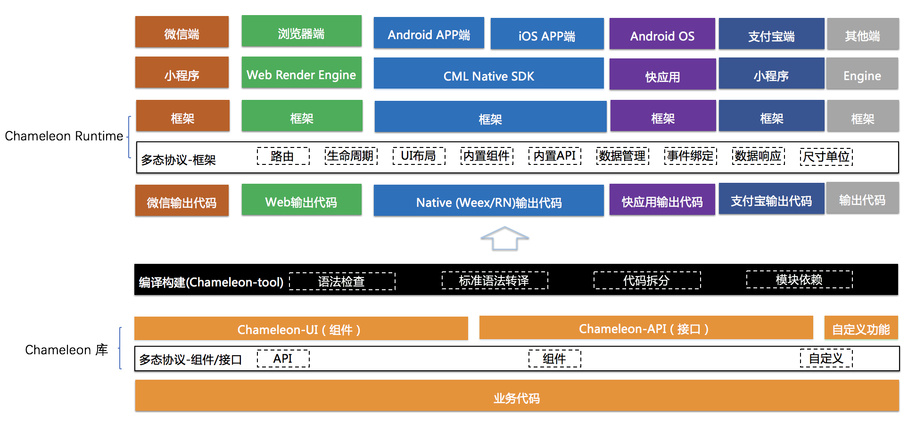

FAQ
怎么理解框架的实现原理？
实现原理图 
我想使用chameleon，是否需要大刀阔斧的重构项目？
不需要，可以使用chameleon开发公用组件，导出到各端原有项目中使用。
用CML标准编写代码，是否增加调试成本？
我们实现了全面的语法检查功能，且在持续加强。理论上框架是降低调试成本，就像从原生js开发到vuejs、reactjs是否认为也增加了调试成本，见仁见智。
各端包括小程序的接口更新频繁，如何保证框架编译的抽象度和稳定性？
1、自建输入语法标准 cml，编译输出结果自定的格式语法。 2、框架的runtime层实现匹配接收的编译输出代码，runtime跟随小程序更新。 3、框架整体方向一致：mvvm底层设计模式为标准设计接口。 基于以上三条，你可以理解为：我们设计了一个框架统一标准协议，再在各个端runtime分别实现这个框架，宏观的角度就像nodejs同时运行在window和macOS系统，就像flutter运行在Android和iOS一个道理。各端小程序接口更新除非遇到不向下兼容情况，否则不影响框架，如果真遇到不向下兼容更新，这种情况下是否用框架都需要改。
框架有多大，性能是否有影响？
1、小程序的主要运行性能瓶颈是webview和js虚拟机的传输性能，我们在这里会做优化，尽可能diff出修改的部分进行传输，性能会更好。 2、包大小，小程序有包大小限制，web端包大小也是工程师关心的点。首先基于多态协议，产出包纯净保留单端代码；其次框架的api和组件会按需打包。包大小是我们重点发力点，会持续优化到极致。目前build模式包大小测试结果如下: minimize | minimize + gzip
| 平台 | js总体积 | 外部框架 | chameleon运行时代码 | 其他代码 |
|---|---|---|---|---|
| web | 141.87kb | 43.72kb |
vue+vuex+vue-router 99.26kb | 33.89kb |
35.96kb | 8.85kb | 业务代码 |
| weex | 135kb | 32.43kb |
vuex+vue-router 33.49kb | 17.96kb |
25.23kb | 5.94kb | 业务代码 |
| wx | 101.66kb | 28.12kb | mobx算在chameleon运行时中 | 98.75kb | 26.53kb | 业务代码 |
| baidu | 101.72kb | 28.13kb | mobx算在chameleon运行时中 | 98.78kb | 26.61kb | 业务代码 |
| alipay | 102kb | 28.12kb | mobx算在chameleon运行时中 | 99.15kb | 26.34kb | 业务代码 |
我只想跨web和各类小程序，是否可以不使用 Flexbox 布局模型？
可以，如果你的项目不在 快应用、react-native、weex等平台运行，可以更便捷开发项目，特别是CSS的限制更少： 只跨web和小程序的应用
一套代码运行多端，如何保证各个端充分的定制化空间？
基于多态协议，充分保证各端发挥，且保证最终一致性。
各端包括小程序的接口更新后，是否一定依赖框架更新？
同上一个问题，基于多态协议，可自己直接调用新的底层接口。
怎么使用微信小程序的原生button？
同类问题：
1、怎么使用微信授权登录？
2、怎么使用小程序登录？
这个功能是微信小程序等特有的功能，所以不建议写在公用跨端部分，用多态组件封装适合自己业务的 <passport>组件，在 passport.wx.cml 里面使用 <origin-button>来调用微信小程序原生组件。
CML 框架方为什么不直接提供组件？
目前提供的封装的组件都是可跨所有端。而微信小程序的免密授权登录功能时小程序所特有的功能，在 web 端时用户可能需要用账号密码登录，各个公司业务的登录功能设计不一致，平台无法提供统一的 passport 组件；所以在你第一次使用 CML 时需要自己用多态组件封装一次<passport>登录组件，后续所有项目都可以使用这个<passport>登录组件.
现在提供的组件是针对三端通用，很多小程序特有功能不能使用，后续有什么改进规划吗？
目前我们正在开发只针对小程序的组件库，用户可以直接使用各类小程序统一版本的登录组件库。 同时基于多态组件的重载能力可以重载登录组件的 web 端实现，这样既能在各类小程序使用统一登录，又能定制化 web 端等登录能力。